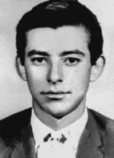

Dimas
Antônio
Casemiro
CIRCUNSTÂNCIAS DA MORTE
Dimas Antônio Casemiro morreu em São Paulo (SP), em abril de 1971. De acordo com a narrativa apresentada pelas forças de segurança do Estado durante o regime militar, Dimas Casemiro teria morrido no dia 17 de abril de 1971, atingido por disparo de arma de fogo após ter resistido à voz de prisão de agentes do Estado. O confronto teria sido travado em um “aparelho” do MRT, localizado no bairro de Água Funda, em São Paulo. A certidão de óbito de Dimas Casemiro, registrada no dia 28 de abril de 1971, apresenta a versão de que ele teria sido morto em via pública no dia 17 de abril de 1971, tendo como causa da morte “choque hemorrágico”. O documento para requisição de exame de necropsia, feito pelo Instituto Médico-Legal (IML), confirmou a versão de que Dimas teria morrido durante uma troca de tiros com agentes da repressão. Segundo o laudo do IML, o corpo de Dimas teria sido encaminhado à Delegacia de Ordem Política e Social (DOPS) para ser fotografado e para o registro de impressões digitais. O exame teria sido realizado no dia 19 e o sepultamento, no dia 20 de setembro. O documento foi assinado pelo delegado do DOPS, Alcides Cintra Bueno Filho. Pesquisas documentais não localizaram nenhum registro sobre o local onde o corpo de Dimas esteve durante os dois dias que transcorreram desde seu óbito, amplamente noticiado pela imprensa como tendo ocorrido no dia 17 de abril, e a data de solicitação do exame necroscópico pelo IML, no dia 19 de abril. O laudo do exame necroscópico, assinado pelo médico-legista João Pagenotto no dia 19 de abril, registrou quatro ferimentos causados por arma de fogo no pescoço, braço, mão e coxa. Segundo o documento, o corpo de Dimas teria sido encaminhado para o cemitério de Perusi no dia 20 do mesmo mês. Entretanto, seu corpo nunca foi localizado ou identificado. De acordo com o dossiê dos mortos e desaparecidos, elaborado em 1984 pela seção Rio Grande do Sul do Comitê Brasileiro pela Anistia, Dimas foi fuzilado ao chegar a casa dele, corroborando a informação oficial. No entanto, no livro Direito à memória e à verdade a CEMDP concluiu que Dimas foi preso e o corpo somente deu entrada no IML depois de ter sido publicada a notícia de sua morte, nos jornais do dia 18/04/1971. A requisição de exame ao IML, assinada pelo delegado do DOPS Alcides Cintra Bueno Filho, informa que a morte se deu na rua Elísio da Silveira, 27, no bairro Saúde, às 13 horas do dia 17 de abril. Entretanto, o corpo de Dimas, ainda de acordo com a própria requisição de exame, só deu entrada no IML às 14 horas do dia 19 de abril, tendo sido enterrado às 10 horas do dia 20. Em 1996, a Universidade Estadual de Campinas (Unicamp) afirmou, sobre o processo de identificação de ossadas que se acreditava pertencerem a Dimas: encontro de ossada compatível porém, devido a grande fragmentação dos ossos, muitos aspectos antropométricos estão prejudicados, assim sendo, amostras foram enviadas para extração de DNA”. Sem qualquer conclusão, em 1999, os familiares de Dimas solicitaram a intervenção do Ministério Público Federal no caso. Em 2010, concluiu-se pela impossibilidade de identificar os restos mortais de Dimas, da maneira como vinha sendo realizado o procedimento. Em 2011, o Ministério Público Federal deu início a investigação criminal, sob o processo n. 1.34.001.007805/2011-00, com o objetivo de esclarecer a morte de Dimas, seguida de ocultação do cadáver. O resultado das investigações, entretanto, não foram esclarecedores. De acordo com a informação do Ministério Público Federal, “nada foi esclarecido, permanecendo esses fragmentos ósseos, que se suspeita como de Dimas, sem inumação. A CEMDP concluiu que Dimas foi torturado entre os dias 17, data em que foi supostamente alvejado, e o dia 19, data do exame da necrópsia, desmentindo a versão oficial de “morte em tiroteio”. As fotos do corpo de Dimas mostram lesões na região frontal mediana e esquerda, no nariz e, principalmente, nos cantos internos dos dois olhos, não descritas no laudo necroscópico e indicativas de tortura. As datas mencionadas acima, portanto, não seriam apenas erros ou mera confusão, segundo o relatório da CEMDP, mas uma tentativa de encobrir sua morte sob torturas enquanto esteve sob custódia do Estado brasileiro.
Dimas Antônio Casemiro died in São Paulo (SP), in April 1971. According to the narrative presented by the State security forces during the military regime, Dimas Casemiro would have died on April 17, 1971, hit by a gunshot after resisting the arrest of State agents. The confrontation reportedly took place in an MRT “apparatus”, located in the Água Funda neighborhood, in São Paulo. Dimas Casemiro's death certificate, registered on April 28, 1971, presents the version that he was killed on public roads on April 17, 1971, with the cause of death being “hemorrhagic shock”. The document for requesting an autopsy examination, made by the Medical-Legal Institute (IML), confirmed the version that Dimas had died during an exchange of gunfire with repression agents. According to the IML report, Dimas' body would have been sent to the Political and Social Order Police Station (DOPS) to be photographed and for fingerprints to be recorded. The examination would have taken place on the 19th and the burial on the 20th of September. The document was signed by the DOPS delegate, Alcides Cintra Bueno Filho. Documentary research did not locate any record of the location where Dimas's body was during the two days that passed since his death, widely reported in the press as having occurred on April 17th, and the date of request for the necroscopic examination by the IML, on April 19th. The autopsy report, signed by coroner João Pagenotto on April 19, recorded four gunshot wounds to the neck, arm, hand and thigh. According to the document, Dimas' body would have been sent to the Perusi cemetery on the 20th of the same month. However, his body was never located or identified. According to the dossier of the dead and missing, prepared in 1984 by the Rio Grande do Sul section of the Brazilian Committee for Amnesty, Dimas was shot upon arriving at his home, corroborating the official information. However, in the book Right to Memory and Truth, CEMDP concluded that Dimas was arrested and the body was only admitted to the IML after the news of his death was published in the newspapers on 04/18/1971. The examination request to the IML, signed by DOPS delegate Alcides Cintra Bueno Filho, informs that the death occurred on Rua Elísio da Silveira, 27, in the Saúde neighborhood, at 1 pm on April 17th. However, Dimas's body, according to the examination request itself, was only admitted to the IML at 2 pm on April 19th, having been buried at 10 am on the 20th. In 1996, the State University of Campinas (Unicamp) stated, regarding the process of identifying bones that were believed to belong to Dimas: finding a compatible bone, however, due to the great fragmentation of the bones, many anthropometric aspects are impaired, thus Therefore, samples were sent for DNA extraction." Without any conclusion, in 1999, Dimas' family members requested the intervention of the Federal Public Ministry in the case. In 2010, it was concluded that it was impossible to identify Dimas' mortal remains, in the way the procedure had been carried out. In 2011, the Federal Public Ministry began the criminal investigation, under process no. 1.34.001.007805/2011-00, with the aim of clarifying the death of Dimas, followed by the concealment of the corpse. The results of the investigations, however, were not enlightening. According to information from the Federal Public Ministry, “nothing was clarified, with these bone fragments, suspected to be those of Dimas, remaining uninhumed. The CEMDP concluded that Dimas was tortured between the 17th, the date on which he was allegedly shot, and the 19th, the date of the autopsy examination, refuting the official version of “death in a shooting”. The photos of Dimas' body show injuries in the middle and left frontal region, in the nose and, mainly, in the inner corners of both eyes, not described in the necroscopic report and indicative of torture. The dates mentioned above, therefore, would not be just errors or mere confusion, according to the CEMDP report, but an attempt to cover up his death under torture while he was in the custody of the Brazilian State.
Dimas Antônio Casemiro murió en São Paulo (SP), en abril de 1971. Según el relato presentado por las fuerzas de seguridad del Estado durante el régimen militar, Dimas Casemiro habría muerto el 17 de abril de 1971, alcanzado por un disparo de arma de fuego tras resistirse al arresto de agentes del Estado. El enfrentamiento habría tenido lugar en un “aparato” del MRT, ubicado en el barrio Água Funda, en São Paulo. El certificado de defunción de Dimas Casemiro, registrado el 28 de abril de 1971, presenta la versión de que fue asesinado en la vía pública el 17 de abril de 1971, siendo la causa de la muerte “shock hemorrágico”. El documento de solicitud de autopsia, elaborado por el Instituto Médico Legal (IML), confirmó la versión de que Dimas había muerto durante un intercambio de disparos con agentes represivos. Según el informe del IML, el cuerpo de Dimas habría sido enviado a la Comisaría de Orden Político y Social (DOPS) para ser fotografiado y tomarle las huellas dactilares. El interrogatorio habría tenido lugar el día 19 y el entierro el 20 de septiembre. El documento fue firmado por el delegado del DOPS, Alcides Cintra Bueno Filho. La investigación documental no encontró registro alguno del lugar donde estuvo el cuerpo de Dimas durante los dos días transcurridos desde su muerte, ampliamente reportada en la prensa como ocurrida el 17 de abril, y la fecha de solicitud del examen necroscópico por parte del IML, el 19 de abril. El informe de la autopsia, firmado por el forense João Pagenotto el 19 de abril, registró cuatro heridas de bala en el cuello, brazo, mano y muslo. Según el documento, el cuerpo de Dimas habría sido enviado al cementerio de Perusi el día 20 del mismo mes. Sin embargo, su cuerpo nunca fue localizado ni identificado. Según el expediente de muertos y desaparecidos, elaborado en 1984 por la sección de Rio Grande do Sul del Comité Brasileño de Amnistía, Dimas fue baleado al llegar a su casa, corroborando la información oficial. Sin embargo, en el libro Derecho a la Memoria y a la Verdad, el CEMDP concluyó que Dimas fue detenido y el cuerpo fue ingresado al IML recién después de que se publicó en los periódicos la noticia de su muerte el 18/04/1971. La solicitud de examen al IML, firmada por el delegado del DOPS, Alcides Cintra Bueno Filho, informa que la muerte ocurrió en la calle Elísio da Silveira, 27, en el barrio de Saúde, a las 13 horas del día 17 de abril. Sin embargo, el cuerpo de Dimas, según la propia solicitud de examen, sólo fue ingresado en el IML a las 14 horas del 19 de abril, habiendo sido enterrado a las 10 horas del día 20. En 1996, la Universidad Estadual de Campinas (Unicamp) afirmó, respecto al proceso de identificación de huesos que se creía pertenecientes a Dimas: encontrar un hueso compatible, sin embargo, debido a la gran fragmentación de los huesos, muchos aspectos antropométricos están alterados, por lo que se enviaron muestras para extracción de ADN. Sin llegar a ninguna conclusión, en 1999, los familiares de Dimas solicitaron la intervención del Ministerio Público Federal en el caso. restos, en la forma en que se había llevado a cabo el procedimiento. En 2011, el Ministerio Público Federal inició la investigación penal, bajo el proceso n. los de Dimas, que quedaron intactos. El CEMDP concluyó que Dimas fue torturado entre el día 17, fecha en la que presuntamente fue baleado, y el 19, fecha del examen de la autopsia, refutando la versión oficial de “muerte a tiros”. Las fotografías del cuerpo de Dimas muestran heridas en la región frontal media e izquierda, en la nariz y, principalmente, en las esquinas internas de ambos ojos, no descritas en el informe necroscópico y que indican tortura. Las fechas antes mencionadas, por lo tanto, no serían meros errores o mera confusión, según el informe del CEMDP, sino un intento de encubrir su muerte bajo tortura mientras se encontraba bajo custodia del Estado brasileño.